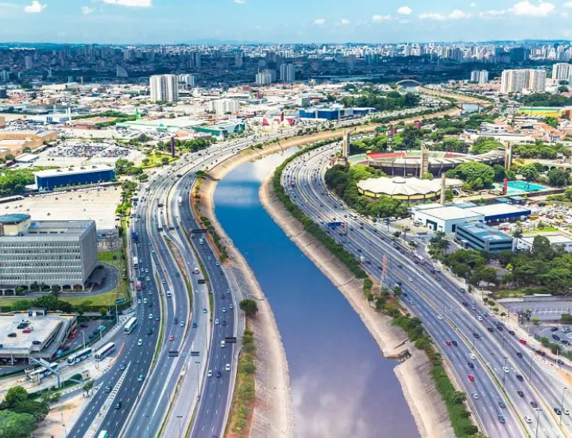
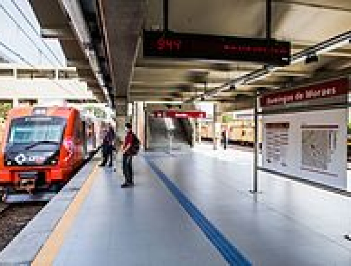
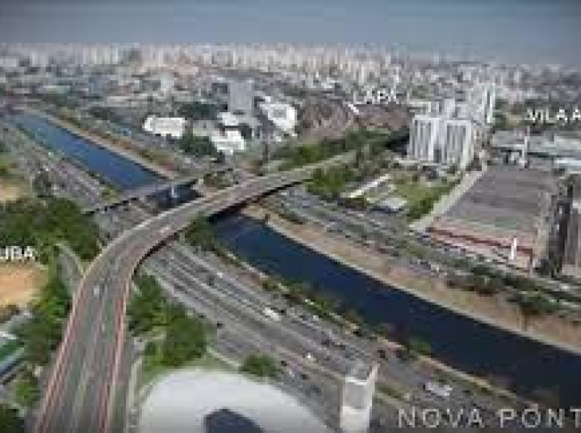

AvenidasProximidade à Marginal Tietê, rodovias Anhanguera, Bandeirantes, Marginal Pinheiros, Avenida Gastão Vidigal. |
 |
|  |
EstaçõesEstação Domingos de Moraes, da linha 8-Diamante da CPTM. Além da proximidade com a Linha 7-Rubi. |
Projeto Pirituba-LapaA vila Anastácio está beneficiada com o projeto viário Pirituba-Lapa que interliga o bairro ás duas margens do rio Tietê e a construção da ponte Raimundo Pereira de Magalhães. |
 |